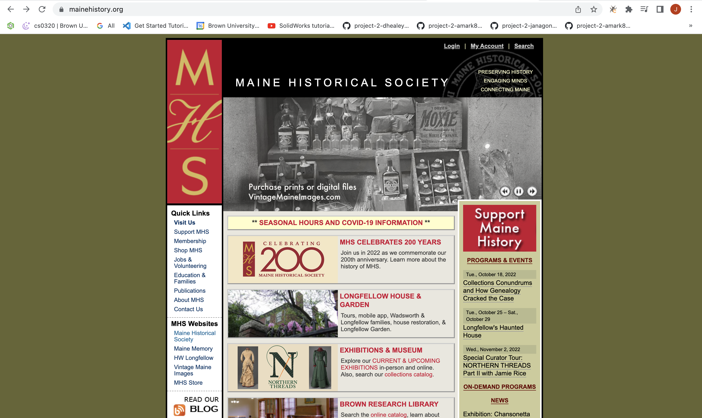
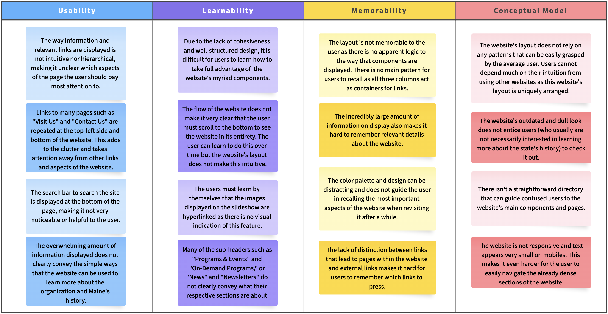
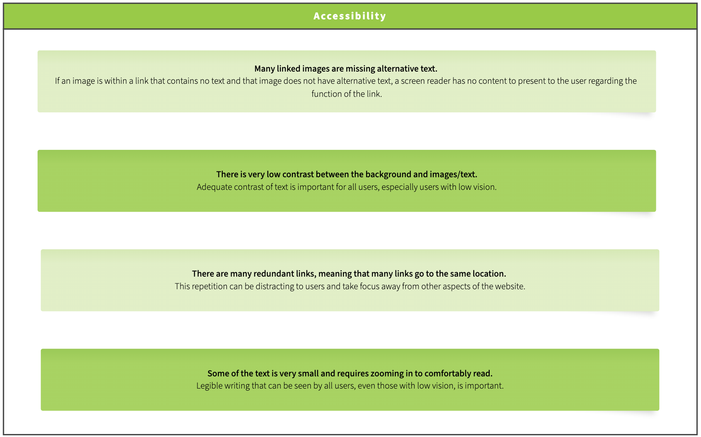
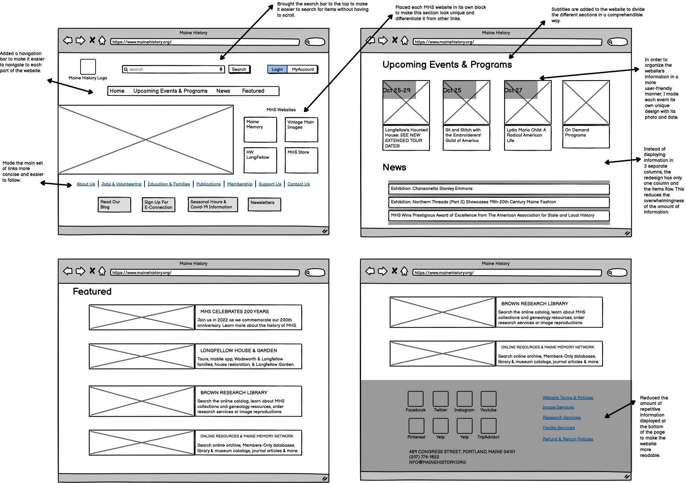
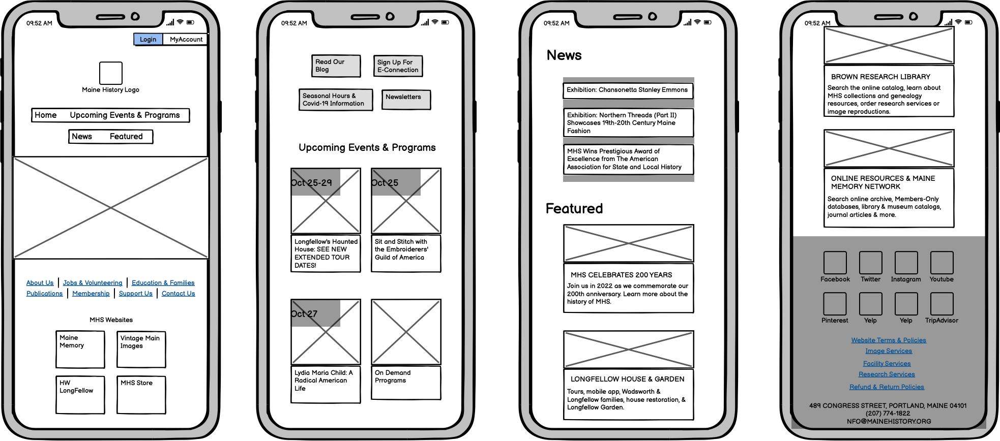
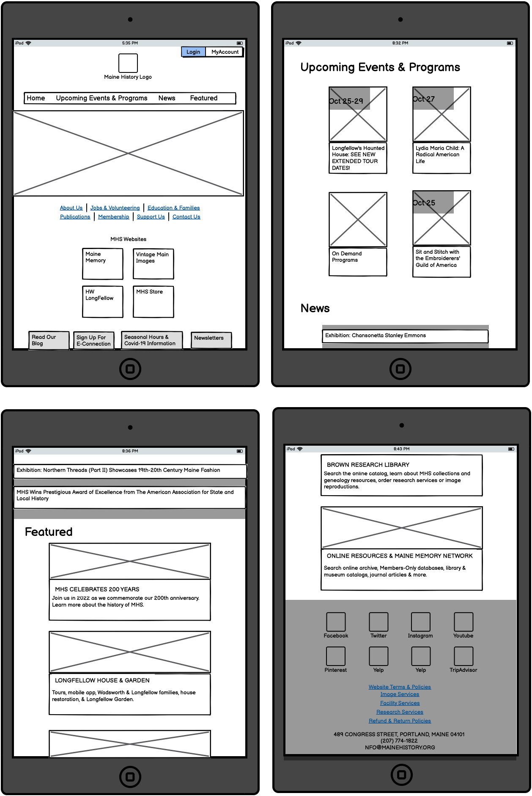
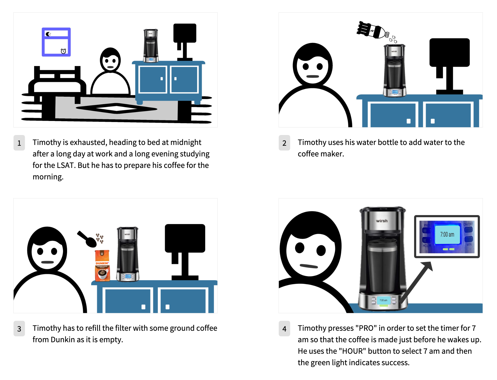
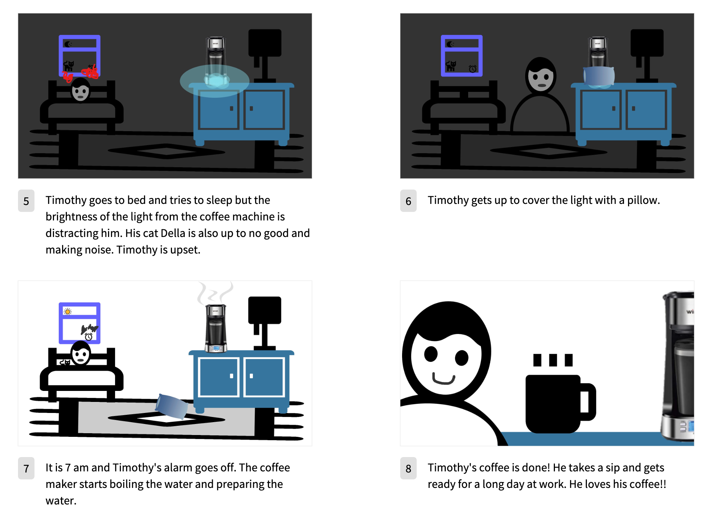

choosing a web page.
I decided to redesign the website for the Maine Historical Society. My boyfriend is from Maine and I have always been interested in learning more about the state's history. However, I have always been frustrated with many aspects of the front webpage and am eager to propose a redesign.

identifying user problems.
Before creating low and high fidelity models and redesigning the website, I jotted down and categorized the main user problems that can arise when using it.
I also considered accessibility issues that could arise..
low fidelity.
I created low fidelity designs for 3 screens (laptop, iphone & ipad).
Laptop Screen Size
IPhone Screen Size
IPad Screen Size
high fidelity.
Lastly, I created a storyboard focused on Timothy's user experience. He is one of the three coffee maker users I interviewed.

final redesign.
Lastly, I created a storyboard focused on Timothy's user experience. He is one of the three coffee maker users I interviewed.